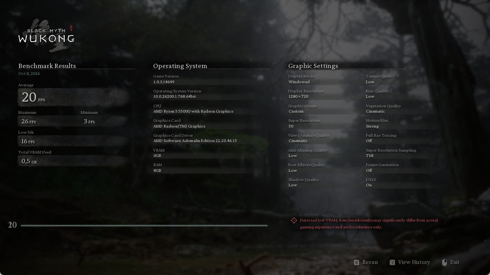
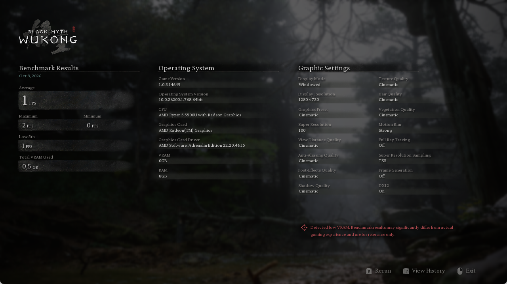

2026-10-08 23:16:25 +03:00 · Steam build 15365379 · Статус: completed
| Компонент | Характеристики |
|---|---|
| CPU | AMD Ryzen 5 5500U with Radeon Graphics ; 6 ядер / 12 потоков |
| GPU | Honor Virtual Display Device; драйвер 1.0.0.4 |
| GPU | AMD Radeon(TM) Graphics; драйвер 31.0.12046.15003 |
| RAM | 7.3 GiB |
{
"Gpu": [
{
"Name": "Honor Virtual Display Device",
"DriverVersion": "1.0.0.4",
"VideoProcessor": null
},
{
"Name": "AMD Radeon(TM) Graphics",
"DriverVersion": "31.0.12046.15003",
"VideoProcessor": "AMD Radeon Graphics Processor (0x164C)"
}
],
"Board": {
"Manufacturer": "HONOR",
"Product": "NMH-WCX9-PCB"
},
"Os": {
"Caption": "Microsoft Windows 11 Home Single Language",
"Version": "10.0.26200",
"BuildNumber": "26200"
},
"Memory": [
{
"Capacity": 4294967296,
"Speed": 3200,
"ConfiguredClockSpeed": 3200
},
{
"Capacity": 4294967296,
"Speed": 3200,
"ConfiguredClockSpeed": 3200
}
],
"System": {
"Manufacturer": "HONOR",
"Model": "NMH-WCX9",
"TotalPhysicalMemory": 7879585792
},
"Cpu": [
{
"Name": "AMD Ryzen 5 5500U with Radeon Graphics ",
"NumberOfCores": 6,
"NumberOfLogicalProcessors": 12,
"MaxClockSpeed": 2100
}
]
}| Проход | Средний FPS | Минимальный FPS | Максимальный FPS |
|---|---|---|---|
| CPU | 20.0 | 3.0 | 26.0 |
| GPU | 1.0 | 0.0 | 2.0 |
FPS распознаны с итогового экрана самого бенчмарка; скриншоты и OCR сохранены. Пропущенные/ошибочные проходы не получают выдуманных результатов.
1280×720; масштаб 50%; TSR; Frame Generation OFF; VSync OFF; FPS без ограничения; Full RT OFF
Дальность и растительность Cinematic, остальные группы Low. Проверка настроек: verified.
{
"sg.ResolutionQuality": "50",
"sg.ViewDistanceQuality": "4",
"sg.FoliageQuality": "4",
"sg.AntiAliasingQuality": "0",
"sg.ShadowQuality": "0",
"sg.GlobalIlluminationQuality": "0",
"sg.RayTracingQuality": "0",
"sg.ReflectionQuality": "0",
"sg.PostProcessQuality": "0",
"sg.TextureQuality": "0",
"sg.EffectsQuality": "0",
"sg.ShadingQuality": "0"
}Настройки, сохранённые бенчмарком

1280×720; масштаб 100%; TSR; Frame Generation OFF; VSync OFF; FPS без ограничения; Full RT OFF
Все группы Cinematic. Проверка настроек: verified.
{
"sg.ResolutionQuality": "100",
"sg.ViewDistanceQuality": "4",
"sg.FoliageQuality": "4",
"sg.AntiAliasingQuality": "4",
"sg.ShadowQuality": "4",
"sg.GlobalIlluminationQuality": "4",
"sg.RayTracingQuality": "0",
"sg.ReflectionQuality": "4",
"sg.PostProcessQuality": "4",
"sg.TextureQuality": "4",
"sg.EffectsQuality": "4",
"sg.ShadingQuality": "4"
}Настройки, сохранённые бенчмарком

CPU-профиль снижает нагрузку на GPU, но сцена Wukong не гарантирует чистую изоляцию процессора. GPU-профиль использует максимальное качество при выбранном разрешении. Обе оценки зависят от всего ПК.